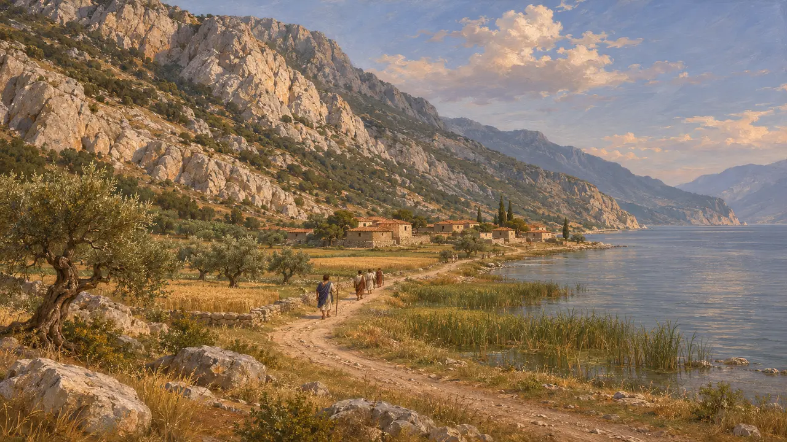
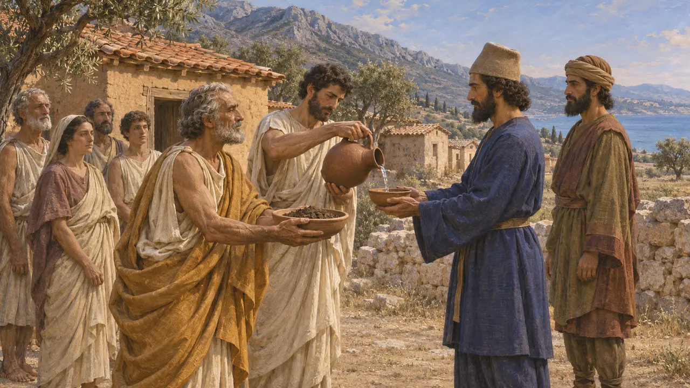
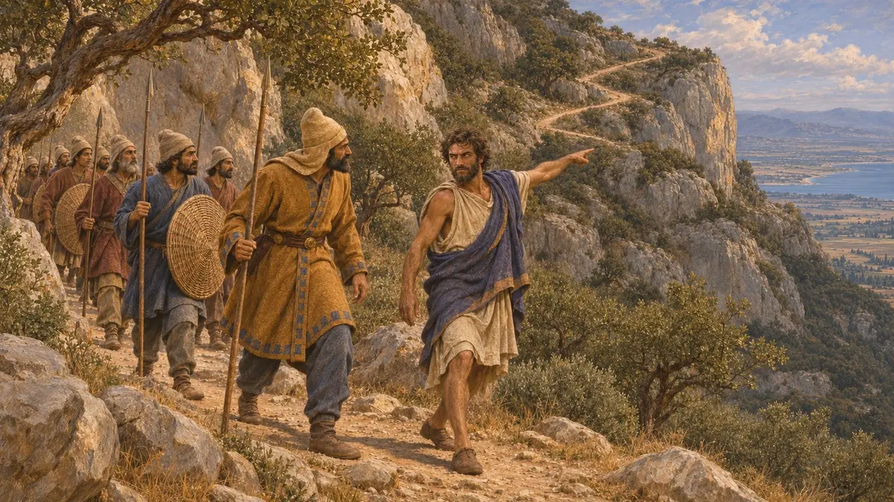
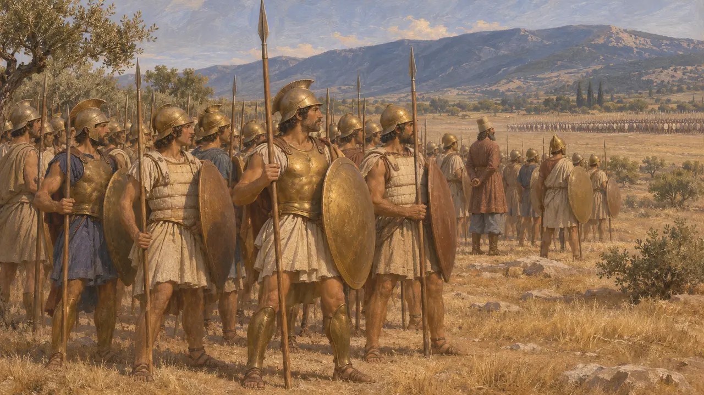
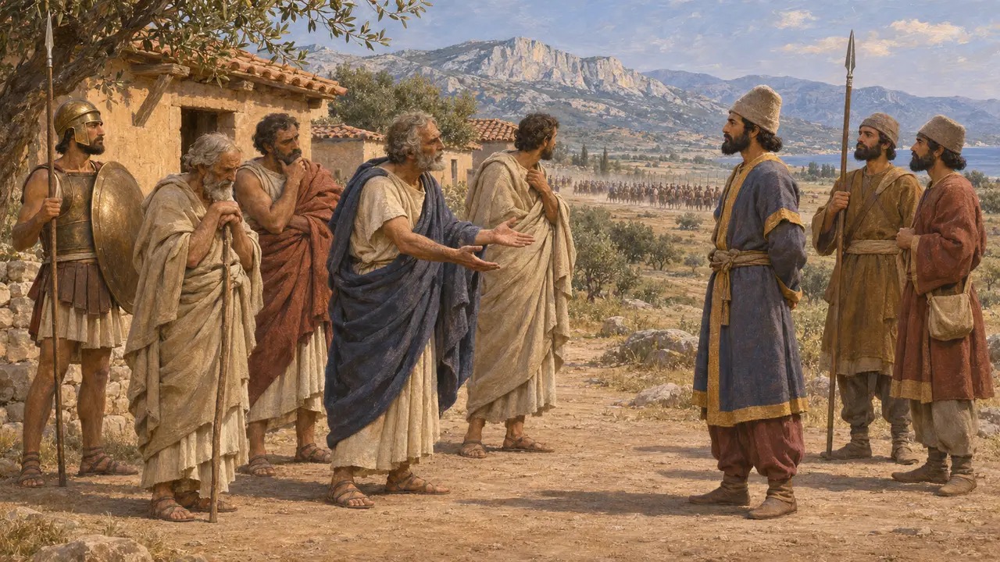

Os málios
Povo grego do golfo Maliaco, no caminho das Termópilas, 480-479 a.C.
No jogo: Nível 11: O Final
Os málios viviam em torno do vale do Esperqueu e do golfo Maliaco, na Grécia central. Seu território incluía o desfiladeiro das Termópilas. Heródoto os lista entre os povos que deram terra e água a Xerxes em 480 e os coloca na linha de Mardônio em Plateias em 479.
No jogo: O jogo nomeia os málios só em entradas da Crônica, decretos e notas de campanha de Plateias, onde aparecem entre os gregos do lado do Rei. Eles não têm unidade nem mecânica própria além do que esses textos mostram.

Onde viviam os málios
Relato antigoHeródoto descreve a Málida como uma planície costeira no golfo Maliaco, estreita em certos pontos entre as montanhas e o mar. Ele situa nesse terreno as Termópilas e a cidade de Antela. Um exército que marchasse da Tessália para a Grécia central tinha de passar pela terra dos málios.
Herodotus 7.198-200

Terra e água para Xerxes
Relato antigoHeródoto lista os málios entre os povos do norte e do centro da Grécia que deram terra e água aos arautos do Rei em 480. Ele também nomeia gregos que não o fizeram. Não há relato de que os málios tenham resistido, e o desfiladeiro ficava na terra deles.
Herodotus 7.132

Efialtes e a trilha da montanha
DisputadoHeródoto diz que um málio, Efialtes filho de Euridemo, mostrou aos persas a trilha pela montanha, o que levou ao cerco dos defensores nas Termópilas. Ele também registra que alguns apontavam outros homens, Onetes e Corídalo, e rejeita essa versão. A história se apoia na tradição grega, e nenhuma fonte persa a menciona.
Herodotus 7.213-214


Aliados voluntários ou forçados
DisputadoHeródoto não dá nenhum motivo para a submissão dos málios. Para outros povos ele dá: diz que os fócios foram empurrados para o lado persa pela hostilidade dos tessálios. Os historiadores modernos em geral explicam essas submissões por uma mistura de medo, rivalidades locais e proximidade do exército persa.
P. Briant, From Cyrus to Alexander, 2002
Fontes
- Herodotus 7.132
- Herodotus 7.198-200
- Herodotus 7.213-214
- Herodotus 9.31
- P. Briant, From Cyrus to Alexander, 2002